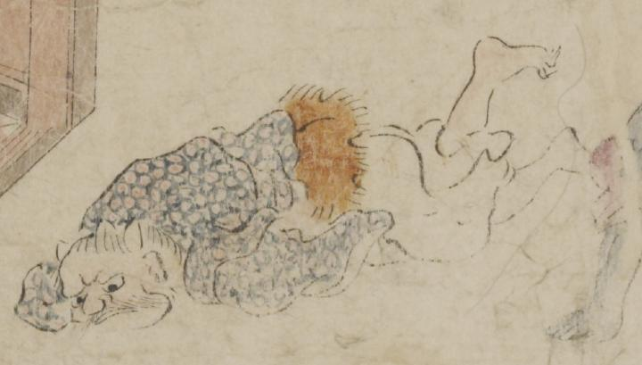

額に角のようなものを2本生やした鬼。額は割れ、目玉が大きい。口ひげを生やし、顎がいかつい。青い模様が入った着物と白い袴を着て、腰に毛皮を巻いている。うつ伏せに倒れこんでいる。
著作者：坂本弥一郎徳定／出典：親書誌：U426_nichibunken_0080：伊吹山酒呑童子絵巻；イブキヤマシュテンドウジエマキ／日付：2007／資源識別子：U426_nichibunken_0080_0007_0007
Copyright (c)2010- International Research Center for Japanese Studies, Kyoto, Japan. All rights reserved.